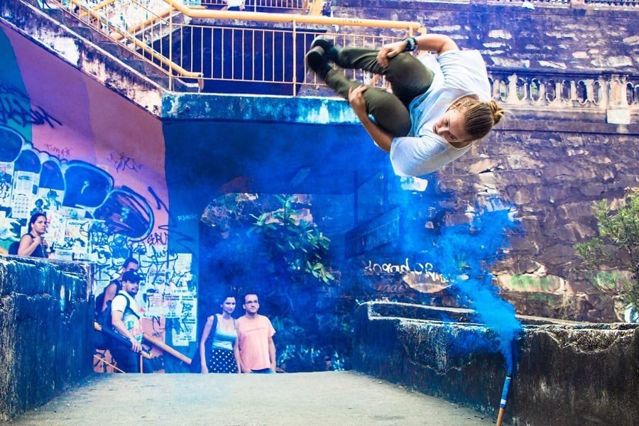
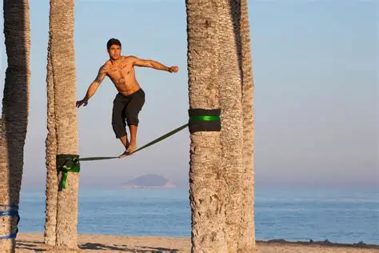
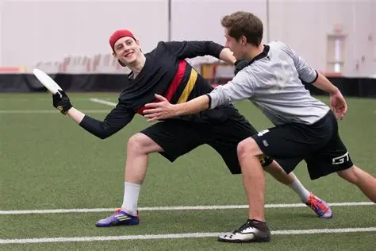

Parkour

Brasileiro vence torneio mundial
Lucas “Flow” Santos conquista o topo em Praga com manobras impecáveis.
Parkour nas periferias
Jovens transformam muros em oportunidades com arte urbana e disciplina.

Parkour estreia em festival
Urban Games inclui o parkour como modalidade oficial pela 1ª vez.
Slackline
Recorde mundial em cânion
Desmet cruza 1km de fita a 500m de altura. Impressionante!
Festival em Floripa
Slackliners do mundo inteiro se reúnem em clima de celebração e técnica.

Slackline nas escolas
Equilíbrio e concentração ganham espaço na educação física.
Ultimate Freesbe
Carlos Afonso é campeão mundial
Brasileiro vence torneio internacional com muito estilo em Paris.
Lances viralizam nas redes
Estilo livre explode entre jovens criadores nas praças urbanas.

Liga nacional é lançada
Competição brasileira promete revolucionar o freesbe estilo livre.